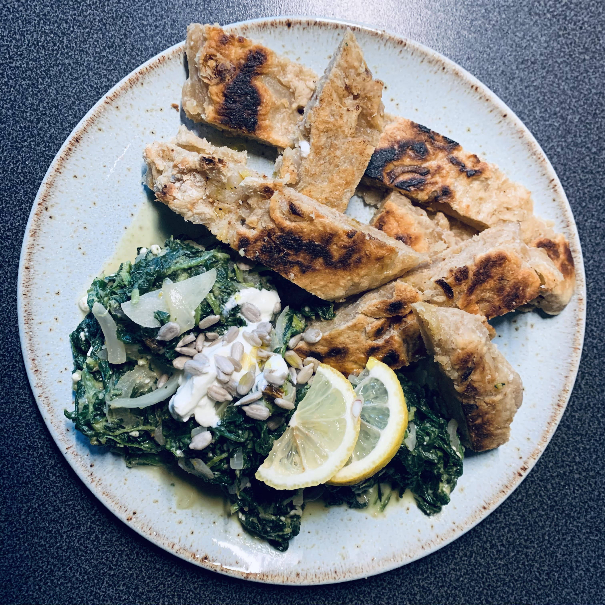

Astrid's Bread

A Basic But Delicious Recipe for Emergencies
Have you been in situations where you had absolutely nothing in your fridge (every sunday)? Fuck mjam, "bake" your own emergency bread!
By "bake" we mean searing it in the pan; Still: It's bread!!!!
Ingredients:
- Flour; 300 g
- Water
- Salt
- Pepper
- Anythin you want
Your Steps
- Put the flour and salt in a bowl
- Add water and knead the mass. The amount of water is on your choice ;)
- Form a little bread out of the mass and sear it in a pan
Secret hint
As said, this is an emergency recipe; Add whatever you have at home to make it even tastier!
Let's cook it again!
Home